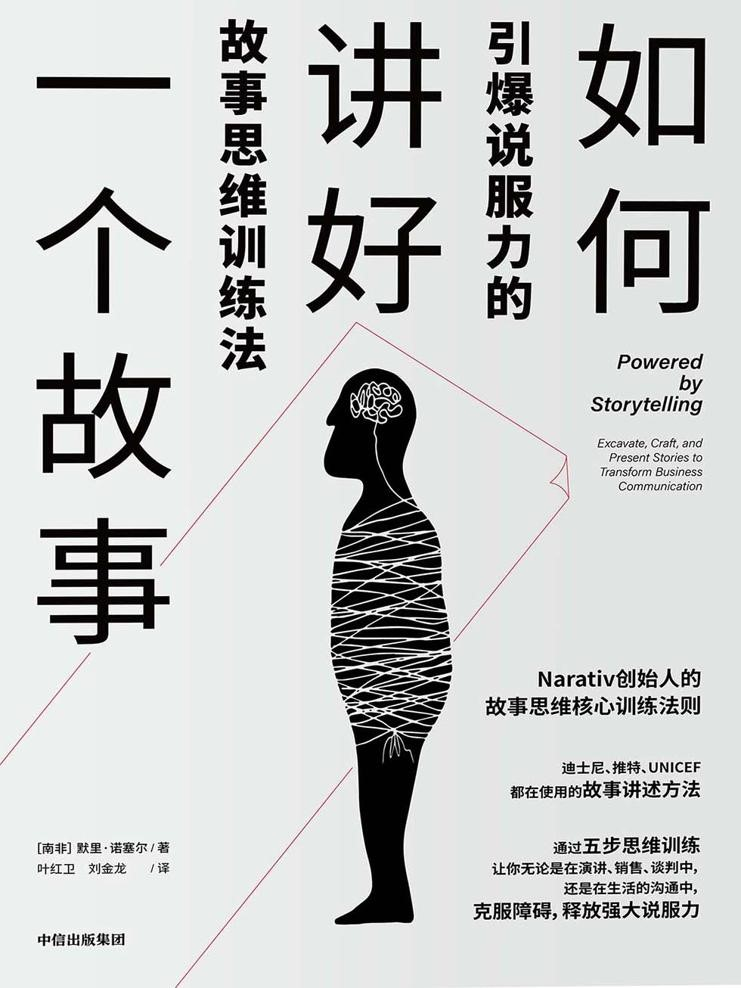

|  |
如何讲好一个故事：引爆说服力的故事思维训练法 |
序言
我接受了索尔彻的方法训练，花了大量时间在布拉瓦约运用他的技术。练习过程包括将演员表演的冲突场景拍摄下来，并与员工一起放映这些电影，然后由员工轮流将其表演出来。例如，在一个模块中，主管正在纠正工作场所员工的行为，他第一步总是先肯定员工的工作，说他们做得很好。这一步骤是基于这一研究：先认可后批评，更容易为员工所接受。
前言
要想成功地讲述故事，需要先简单了解一下故事为何有助于沟通，更需要了解如何在倾听和讲述故事之间建立联系。在我们的方法中，有一点需要强调，即倾听的重要性不亚于讲述，本书第二章将对此进行深入探讨。
大脑的固有功能到底意味着什么？意味着有一个脑细胞网络参与了讲故事。它们在活动时，会更加紧密和高效地连接在一起，讲故事可以加强大脑中的这些联系。而且讲故事是一种可以发展的技能，一种可以加强的能力。过去两年里，我们所做的工作充分证明，你讲的故事越多，就越擅长讲故事。
建议你从个人故事开始训练。挖掘一个可以解释你如何一步一步走到现在的故事，这样的故事特别有说服力，我们称之为“起源故事”（origin story）。我的起源故事是“艾滋病日项目”（AIDS Day Program）的故事，你在第一章可以了解到这个故事的细节。然后，经历了讲述自己身边故事的过程，你接着就可以以个人的方式讲述一个商业故事了。这意味着你可以利用个人故事的所有情感力量和影响来实现商业目标。
我们相信，你讲故事的能力会随着时间和实践的积累而提高，但是如果你按照我们“发生了什么”（What happened）的方法来挖掘和创作故事，你的故事讲述能力定能突飞猛进。我们在第五章专门讨论了这一方法。这种看似简单的方法指出：解释、意见、判断、抽象、概念，以及你对所发生事情的想法和感觉都不是故事材料，真正的材料是感官所接受的、已经证明有效的内容。根据这些说明来回答“发生了什么”，故事就会以一种让听众从头到尾都参与其中的方式展开。
讲故事既包括批判性思维，也包括创造性思维。批判性思维负责分析、比较和选择，而创造性思维则负责形象化、预见和产生想法。由于批判性思维可能阻碍创造性思维，因此挖掘的首要原则是推迟判断。在思考用什么材料来编写故事时，你要让自己变得完全不加批判，让各种各样的想法在脑海浮现出来。只有这样，创作和讲述故事时，才能发挥批判性思维的力量，变得更加理性和克制。
你挖掘并精心创作完故事，也就意味着准备好了展示。你无须查看笔记或幻灯片就可以进行发言。你知道结尾，因此对故事走向充满信心。无须太多的猜测，你有足够的时间带听众进行一次旅行。关键的一点是：所谓以个人方式讲述商业故事，意思是我们的整个生命都在讲述这个故事，你把个人形象带到了企业的目标和愿景上。从一个具体事例开始讲述故事，总能让你把自己和听众联系起来。那正是你狮子般专注力的来源。
网评极差的一本书，我读了开头感觉对我没什么用处，就放弃了。